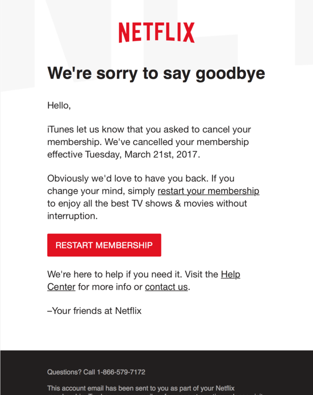
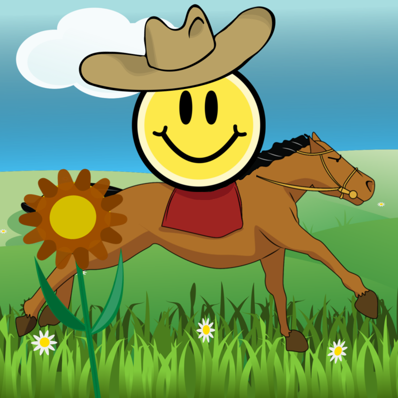

|
|  |
|
|
| To the right is a picture of 4 layers in GIMP Which set of layers best represents the image shown? (assume the exact same image & layer orders in Photopea or Photoshop). |
 |
If you were to open Google Chrome and type in Youtube's ______________ into the ______________ and then press 'Enter', you would be sending Youtube's ______________ a request ______________ that would likely be directed through several ______________ over the Internet ______________.... fill in the 6 blanks (in order) so the sentence makes sense and it is technically correct: